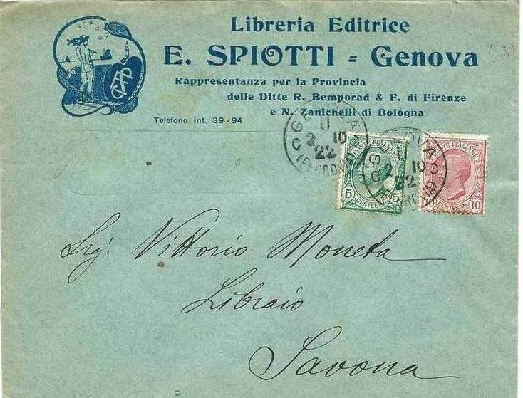

Note: on my website many of the
pictures can not be seen! They are of course present in the
catalogue;
contact me if you want to purchase it.
The forger Edoardo Spiotti from Genoa (Italy) was an Italian stamp forger specializing in Italian States forgeries. I have not much information about him and I have also not been able to find any forgeries made by him.

In The London Philatelist 5 (1896), pages 287-288, the foreword of his catalogue was reproduced in English:
FORGERY—RAMPANT.
It will be recollected that we recently described a dangerous
forged blue Naples seen by Mr. Castle during the Geneva
Exhibition ; and it seems from a modest little catalogue that we
have received, that this particular work of art is only a sample
of the wares that this Italian Chevalier d'Industrie is capable
of turning out. For sublime and concentrated impudence the
following sentences from the Preface deserve placing on record :
" Many amateurs, not being able to complete their
collection, because they are unable to find the genuine rarities,
or on account of the expense, abandon Philately. This is very
dangerous for both collectors and dealers, and in order to remedy
this, the imitations here catalogued—which are so like the
real stamp as to be almost undistinguishable—have been
issued by the editor. Many of these imitations are bought by
societies and Philatelic clubs to instruct their members."
Very likely ; but not in the sense that this miscreant means !
The catalogue includes all the Italian States — " used
" and unused—with 50 c. supplement, if on the entire
letter. The Naples Arms, blue or rose, all values, and the Cross,
can be supplied either on ordinary paper, or, at a higher figure,
on the "paper of the real stamps of 2 grana, faded out, real
watermark, and obliteration."
It includes the current " Italian stamps, genuine, with
imitation surcharge, Colonial Eritrea," and the same as
regards all the Estero series. The English Colonies also figure
bravely—Nevis, Saint Lucia, Trinidad, Mauritius, Gambia, and
others—while the St. Helena are furnished with long and
short bars, etc. Payment, needless to state, must always be in
advance ; but the manufacturer will exchange his wares (made in
Italy) against rare postages stamps either per 1000 or per kilo.
In fact he would take anything, like any other highway robber.
Complete isolation is the only cure for such rascality, and it is
to be regretted that there is no Italian Old Bailey. Unless some
means can be conceived to stop this wholesale forgery, the market
will be flooded with dangerous imitations ; and in the case of
the blue Naples Cross, with its varying centre, they will be
especially likely to deceive many inexperienced collectors. We
will attempt something, even if we achieve nothing.
It appears from the above list that a large part of the forgeries offered above were also in the Oneglia pricelist (for example the St.Helena with long and short bars). Edoardo Spiotti seems to have published a pricelist with forgeries: "Catalogue des imitations des timbres-postes d'Italie et anciens duchés ...: Leur valeur, couleur, date d'emission et prix de vente" in 1897. I have not seen this pricelist. It looks very similar to a pricelist with similar title by the forger Oneglia (issued in 1899): "Catalogue des Imitations des Timbres-Postes d'Italie et anciens duchés, Bresil, Cap de Bonne Esperance, Gambie, Iles Joniennes, Maurice, ecc ecc. Leur valeur, couleur, date d'emission et prix de vente ". This confirms that Spiotti was selling Oneglia's forgeries.